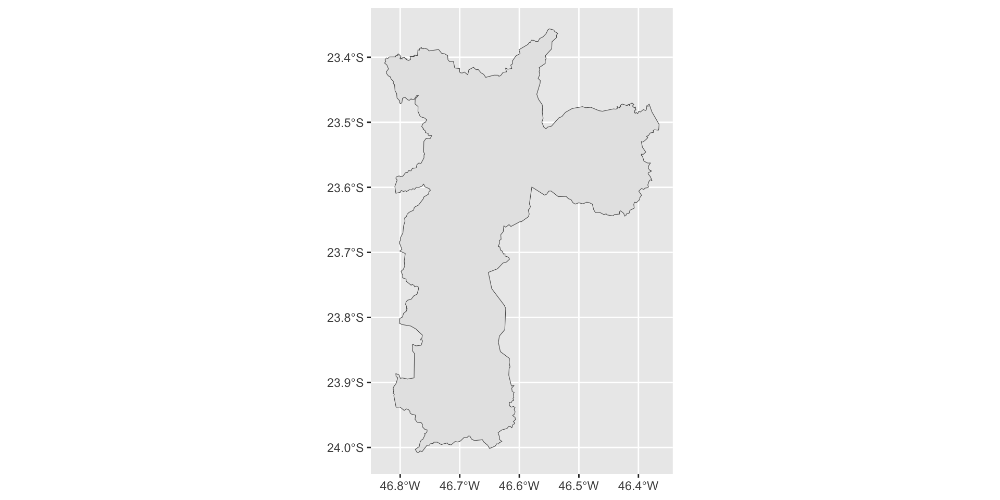

Conhecendo o pacote geobr
aMostra de Estatística 2024 - IME/USP
30/09/2024
Beatriz Milz
Experiência acadêmica
- Doutora em Ciência Ambiental no IEE/USP
- Atualmente:
- Estágio pós-doutoral na UFABC
Comunidades
- Co-organizadora da R-Ladies São Paulo
- Software peer review editor na rOpenSci
- GitHub Star
Organização da tradução: R4DS 2ed
Experiência com dados espaciais
- 2014-2015: Núcleo técnico de Gestão Ambiental/Secretaria de Segurança Urbana/Prefeitura Municipal de São Paulo
- 2016-2018: Mestrado no Programa de Pós Graduação em Análise Ambiental Integrada na UNIFESP, Campus Diadema.
- 2019 em diante: aulas, projetos de consultoria, pesquisa de doutorado, etc.
Plano para hoje!
O que é o pacote geobr
Conceitos importantes
Principais funções do pacote
geobrExemplo Prático!
Links úteis para aprender mais
Pré-requisitos
R e RStudio
Outra opção é utilizar o RStudio Cloud
Principais pacotes que usaremos


Possíveis dificuldades: #1
O pacote geobr tem como dependência o pacote sf. Esse pacote pode apresentar dificuldades para instalar.
Caso tenha problemas, verifique as instruções na documentação:
Pacote geobr
O pacote geobr disponibiliza funções para obter diversas bases de dados espaciais oficiais do Brasil.
O pacote foi desenvolvido e é mantido pela equipe do Instituto de Pesquisa Econômica Aplicada (IPEA).
Você pode saber mais no repositório do pacote no GitHub.
Disponível para
RePython.

Possíveis dificuldades: #2
- O pacote geobr faz o download das bases de dados. Isso significa que:
- Você precisa estar conectado à internet para baixar as bases de dados.
- Caso o servidor onde os dados estão armazenados esteja fora do ar, você não conseguirá baixar as bases de dados.
Uma sugestão é salvar os resultados em um arquivo após baixar os dados, para evitar ter que baixar novamente, com a função readr::write_rds().
Pacotes de dados brasileiros desenvolvidos pelo IPEA

Conceitos importantes
Dados Vetoriais e Dados Matriciais/Raster

Fonte da imagem: https://guides.lib.uw.edu/
Dados vetoriais
- Representação do mundo por pontos, linhas e polígonos.
Fonte: Geocomputation with R
Com o geobr, trabalhamos com dados vetoriais!
Pontos: localização de uma escola, ponto de coleta, etc.
Linhas: ruas/estradas/rodovias, rios, etc.
Polígonos: delimitação de cidades, estados, países, etc.
Pacote sf
- O sf (Simple Features for R) é um pacote para manipulação de dados espaciais vetoriais.

Fonte da imagem: https://github.com/allisonhorst/stats-illustrations

geobr
Funções importantes
read_country(): Delimitação do Brasilread_state(): Delimitação dos estados do Brasilread_state("SP"): Delimitação de um estado específico, usando a sigla como argumentoread_municipality(): Delimitação de todos os municípios do Brasil. É uma base pesada!read_municipality(code_muni = 3550308): Delimitação de um município específico, usando o código do IBGE do município.
Consultando todas as funções disponíveis
- Função
list_geobr()
Exemplos práticos
Exemplo 1:
Localização das escolas que oferecem Ensino Médio no município de São Paulo
Ler a delimitação dos estados brasileiros
Explorando o objeto
Rows: 27
Columns: 6
$ code_state <dbl> 11, 12, 13, 14, 15, 16, 17, 21, 22, 23, 24, 25, 26, 27, 2…
$ abbrev_state <chr> "RO", "AC", "AM", "RR", "PA", "AP", "TO", "MA", "PI", "CE…
$ name_state <chr> "Rondônia", "Acre", "Amazonas", "Roraima", "Pará", "Amapá…
$ code_region <dbl> 1, 1, 1, 1, 1, 1, 1, 2, 2, 2, 2, 2, 2, 2, 2, 2, 3, 3, 3, …
$ name_region <chr> "Norte", "Norte", "Norte", "Norte", "Norte", "Norte", "No…
$ geom <MULTIPOLYGON [°]> MULTIPOLYGON (((-63.32721 -..., MULTIPOLYGON…Visualizando os estados brasileiros
Filtrando o estado de São Paulo
E os municípios?
Explorando o objeto
Rows: 5,565
Columns: 5
$ code_muni <dbl> 1100015, 1100023, 1100031, 1100049, 1100056, 1100064, 110…
$ name_muni <chr> "Alta Floresta D'oeste", "Ariquemes", "Cabixi", "Cacoal",…
$ code_state <chr> "11", "11", "11", "11", "11", "11", "11", "11", "11", "11…
$ abbrev_state <chr> "RO", "RO", "RO", "RO", "RO", "RO", "RO", "RO", "RO", "RO…
$ geom <MULTIPOLYGON [°]> MULTIPOLYGON (((-62.2462 -1..., MULTIPOLYGON…Como saber o código IBGE de um município?
- Você pode consultar o código IBGE de um município no site do IBGE.

Filtrando o município de São Paulo
Visualizando o município de São Paulo
E escolas?
Explorando o objeto
Rows: 222,936
Columns: 19
$ abbrev_state <chr> "RO", "RO", "RO", "RO", "RO", "RO", "RO…
$ name_muni <chr> "Porto Velho", "Porto Velho", "Porto Ve…
$ code_school <int> 11000023, 11000040, 11000058, 11000082,…
$ name_school <chr> "EEEE ABNAEL MACHADO DE LIMA - CENE", "…
$ education_level <chr> "Ensino Fundamental", "Educação Infanti…
$ education_level_others <chr> "Atendimento Educacional Especializado"…
$ admin_category <chr> "Pública", "Pública", "Privada", "Priva…
$ address <chr> "AVENIDA AMAZONAS, 6492 ZONA LESTE. TIR…
$ phone_number <chr> "(69) 992083054", "(69) 32135237", "(69…
$ government_level <chr> "Estadual", "Municipal", "Privada", "Pr…
$ private_school_type <chr> "Não Informado", "Não Informado", "Part…
$ private_government_partnership <chr> "Não", "Não", "Não", "Não", "Não", "Não…
$ regulated_education_council <chr> "Não", "Sim", "Sim", "Sim", "Sim", "Sim…
$ service_restriction <chr> "ESCOLA ATENDE EXCLUSIVAMENTE ALUNOS CO…
$ size <chr> "Entre 51 e 200 matrículas de escolariz…
$ urban <chr> "Urbana", "Urbana", "Urbana", "Urbana",…
$ location_type <chr> "A escola não está em área de localizaç…
$ date_update <chr> "2020-10-18", "2020-10-18", "2020-10-18…
$ geom <POINT [°]> POINT (-63.85401 -8.758459), POIN…Escolas no município de São Paulo
Escolas por government_level
Simple feature collection with 4 features and 2 fields
Geometry type: MULTIPOINT
Dimension: XY
Bounding box: xmin: -46.8074 ymin: -23.90918 xmax: -46.36614 ymax: -23.3996
Geodetic CRS: SIRGAS 2000
government_level n geom
1 Privada 5272 MULTIPOINT ((-46.7133 -23.8...
2 Municipal 1563 MULTIPOINT ((-46.7141 -23.8...
3 Estadual 1275 MULTIPOINT ((-46.75558 -23....
4 Federal 4 MULTIPOINT ((-46.62169 -23....Escolas que oferecem Ensino Médio
Vamos visualizar?
Visualizando as escolas

Visualizando as escolas e o município
Visualizando as escolas por government_level

Visualizando as escolas por government_level
Visualizando as escolas que oferecem Ensino Médio
Localização das escolas estaduais e escolas privadas no município de São Paulo, que oferecem Ensino Médio
Ver código
library(ggspatial)
ensino_medio_sao_paulo |>
filter(government_level %in% c("Estadual", "Privada")) |>
ggplot() +
geom_sf(data = muni_sp) +
geom_sf(aes(color = government_level, alpha = 0.1), show.legend = FALSE) +
facet_wrap(~ nome_label) +
labs(x = "Longitude",
y = "Latitude") +
scale_fill_viridis_d(begin = 0.2, end = 0.9) +
theme(legend.spacing.x = unit(1.0, 'cm')) +
theme_bw() +
theme(
panel.grid.major = element_line(
color = gray(0.9),
linetype = "dashed",
size = 0.1
),
panel.background = element_rect(fill = "white")
) +
theme(
axis.text.y = element_text(
angle = 90,
hjust = 0.5,
size = 8
),
axis.text.x = element_text(size = 8),
axis.title.y = element_text(size = rel(0.8)),
axis.title.x = element_text(size = rel(0.8)),
legend.title = element_text(size = rel(0.8))
)Exemplo 2:
Criando um mapa utilizando dados que não estão no geobr
abjData::pnud_min
Rows: 16,686
Columns: 15
$ ano <chr> "1991", "1991", "1991", "1991", "1991", "1991", "1991", "199…
$ muni_id <chr> "1100015", "1100023", "1100031", "1100049", "1100056", "1100…
$ muni_nm <chr> "ALTA FLORESTA D'OESTE", "ARIQUEMES", "CABIXI", "CACOAL", "C…
$ uf_sigla <chr> "RO", "RO", "RO", "RO", "RO", "RO", "RO", "RO", "RO", "RO", …
$ regiao_nm <chr> "Norte", "Norte", "Norte", "Norte", "Norte", "Norte", "Norte…
$ idhm <dbl> 0.329, 0.432, 0.309, 0.407, 0.386, 0.376, 0.203, 0.425, 0.38…
$ idhm_e <dbl> 0.112, 0.199, 0.108, 0.171, 0.167, 0.151, 0.039, 0.220, 0.15…
$ idhm_l <dbl> 0.617, 0.684, 0.636, 0.667, 0.629, 0.658, 0.572, 0.629, 0.65…
$ idhm_r <dbl> 0.516, 0.593, 0.430, 0.593, 0.547, 0.536, 0.373, 0.553, 0.56…
$ espvida <dbl> 62.01, 66.02, 63.16, 65.03, 62.73, 64.46, 59.32, 62.76, 64.1…
$ rdpc <dbl> 198.46, 319.47, 116.38, 320.24, 240.10, 224.82, 81.38, 250.0…
$ gini <dbl> 0.63, 0.57, 0.70, 0.66, 0.60, 0.62, 0.59, 0.65, 0.63, 0.60, …
$ pop <int> 22835, 55018, 5846, 66534, 19030, 25070, 10737, 6902, 22505,…
$ lat <dbl> -11.929, -9.913, -13.492, -11.438, -13.189, -13.117, -12.962…
$ lon <dbl> -61.996, -63.041, -60.545, -61.448, -60.812, -60.542, -60.88…Dados para o estado de São Paulo
Como elaborar um mapa com esses dados?
Join
- Podemos unir duas bases utilizando uma coluna em comum

Fonte da imagem: https://www.garrickadenbuie.com/project/tidyexplain/
Dados vetoriais
Importar os polígonos com a delimitação dos municípios do estado de São Paulo:
Unir as duas bases de dados
Unir as duas bases de dados
Rows: 1,935
Columns: 19
$ code_muni <chr> "3500105", "3500105", "3500105", "3500204", "3500204", "3…
$ name_muni <chr> "Adamantina", "Adamantina", "Adamantina", "Adolfo", "Adol…
$ code_state <chr> "35", "35", "35", "35", "35", "35", "35", "35", "35", "35…
$ abbrev_state <chr> "SP", "SP", "SP", "SP", "SP", "SP", "SP", "SP", "SP", "SP…
$ ano <chr> "1991", "2000", "2010", "1991", "2000", "2010", "1991", "…
$ muni_nm <chr> "ADAMANTINA", "ADAMANTINA", "ADAMANTINA", "ADOLFO", "ADOL…
$ uf_sigla <chr> "SP", "SP", "SP", "SP", "SP", "SP", "SP", "SP", "SP", "SP…
$ regiao_nm <chr> "Sudeste", "Sudeste", "Sudeste", "Sudeste", "Sudeste", "S…
$ idhm <dbl> 0.592, 0.721, 0.790, 0.513, 0.667, 0.730, 0.491, 0.642, 0…
$ idhm_e <dbl> 0.423, 0.644, 0.750, 0.296, 0.574, 0.648, 0.260, 0.473, 0…
$ idhm_l <dbl> 0.731, 0.811, 0.852, 0.751, 0.802, 0.844, 0.719, 0.801, 0…
$ idhm_r <dbl> 0.672, 0.718, 0.772, 0.608, 0.644, 0.710, 0.634, 0.697, 0…
$ espvida <dbl> 68.87, 73.64, 76.13, 70.04, 73.09, 75.62, 68.14, 73.04, 7…
$ rdpc <dbl> 525.09, 696.10, 975.43, 351.62, 439.57, 661.65, 412.97, 6…
$ gini <dbl> 0.57, 0.55, 0.51, 0.41, 0.38, 0.38, 0.49, 0.55, 0.47, 0.5…
$ pop <int> 31838, 33051, 33490, 3272, 3677, 3557, 23331, 27925, 3208…
$ lat <dbl> -21.685, -21.685, -21.685, -21.235, -21.235, -21.235, -22…
$ lon <dbl> -51.073, -51.073, -51.073, -49.644, -49.644, -49.644, -46…
$ geom <MULTIPOLYGON [°]> MULTIPOLYGON (((-51.09093 -..., MULTIPOLYGON…Visualizando com o ggplot2

Materiais para estudar mais
Exemplos similares
Referências sobre dados espaciais
Slides feitos com Quarto e Quarto R-Ladies Theme.